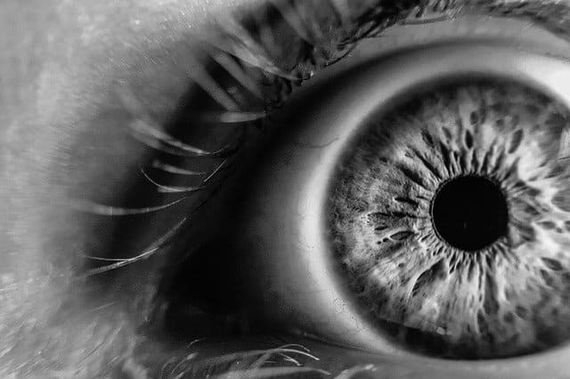

黄斑円孔の鍼灸
網膜の中心である黄斑に丸い穴が開き中心視力が低下する病気です。早期の眼科手術を最優先に、術後安定期の疲労をケアします。
まず知っておきたい要点と施術方針
網膜の中心部に位置する黄斑に丸い穴が開く病気で、中高年とくに女性に多く見られます。主な原因は加齢による硝子体の収縮・剥離の際、網膜上に残った薄い膜が黄斑を強く引っ張ることにあります。強度近視、眼の外傷、眼内炎症などがきっかけになることもあります。放置すると穴が広がり視力低下が進行するため、早期の硝子体手術が標準治療となります。（公式解説）
このようなお悩みはありませんか？
- ✓見たい部分の中心が欠けて見える（中心暗点）
- ✓まっすぐな線がゆがんで見えたり色が変わりやすい
- ✓中心の視力が低下し細かい文字が読みにくい
- ✓硝子体手術後の経過観察中で首肩の疲れが気になる
当院の施術アプローチ
院長YouTube解説・関連動画
黄斑円孔は、黄斑の網膜に丸い穴が開く病気

黄斑円孔は、黄斑の網膜に丸い穴が開く病気です。黄斑は眼底の網膜の中心部分のことです。そのため、黄斑円孔では、ものを見る部分の真ん中に穴が開くことになります。
黄斑は網膜の中心にあり、視力を司っています。そのため、黄斑が病気になると見たい部分が見えなくなってしまうのです。スマホを見るときや人の顔を見るとき、見たい部分の像が見えなくなります。
黄斑円孔は、中高年に多く、特に女性に多いと言われています。
黄斑円孔の原因は、硝子体が網膜上に残ること
黄斑円孔の原因は、硝子体が網膜上に残ることです。
硝子体はコラーゲンと大量の水分を含むヒアルロン酸からできています。しかし、歳をとるとヒアルロン酸の水分を含む力が弱くなっていきます。
そのため、歳をとると硝子体は段々と水になって縮んでいくのです。そして、網膜から剥がれます。剥がれる時、硝子体は網膜上に薄皮のように残ることがあります。この薄皮が網膜を引っ張って黄斑上に穴を作り、黄斑円孔が起きるのです。
黄斑円孔は、眼底の中央部分である黄斑部に小さな円形の穴が開いた状態を指します。いかに原因について説明します。
・加齢による硝子体の変化
眼球内部には硝子体というゼリー状の物質が存在しています。歳を重ねるにつれて、硝子体は収縮し、眼壁から離れる傾向があります。この過程で硝子体が黄斑部の表面に引っかかり、引っ張り上げると、黄斑円孔が形成される可能性があります。
・眼内の炎症
眼内炎やウィートリー症候群などの炎症が眼内に瘢痕組織を形成することで、黄斑部への引っ張りが生じ、円孔が開くことが考えられます。
目に対する外傷や手術後の合併症として、黄斑円孔が生じることがあります。
・高度な近視
高度な近視の場合は、眼軸が長いため、硝子体の引っ張りが黄斑部に影響を及ぼしやすいとされています。
・血管の異常
黄斑部の微細な血管の異常や新生血管の形成が、円孔の原因となることがあります。
・その他の病気
黄斑浮腫、硝子体内出血、網膜剥離など、他の眼の疾患が円孔の形成を引き起こすことが考えられます。
・リスクファクター
特定のリスクファクターが黄斑円孔の形成に関連しているとされています。
女性：女性は男性に比べて黄斑円孔を発症しやすいとされています。
年齢：60歳以上の高齢者に多く見られます。
眼の病気の既往歴：網膜剥離や硝子体手術の歴がある人は、黄斑円孔のリスクが高まる可能性があります。
結論として、黄斑円孔の原因は多岐にわたり、複数の要因が組み合わさって発症することが多いとされています。
黄斑円孔の症状は、見たい部分の像が欠けてしまうこと
黄斑円孔の症状は、見たい部分の像が欠けてしまうことです。スマホを見たり、人の顔を見るとき、見ようと思う部分が欠けてしまうのです。
これは、黄斑の中心は視力を司っている部分で1番よくものが見える場所であるためです。
黄斑円孔の初期段階では、真っ直ぐな線が歪んで見えることがあります。この症状を変視症と言います。
黄斑円孔は、眼の網膜の中央部分である黄斑に発生する病気です。黄斑は私たちの視覚の中心を担当しており、この部分に障害が生じると、さまざまな視覚の問題が発生します。以下、黄斑円孔の主な症状について説明します。
・中心の歪んだ視覚（歪視、メタモルホプシア）
黄斑円孔の最も一般的な症状は、物事が歪んで見えることです。例えば、直線や格子模様が波打ったり曲がって見えたりすることがあります。この歪みは日常の中で、読書や書き物、物の形を確認する時に特に気づきやすいものです。
・中心視力の低下
黄斑は中心視力を司る部分であるため、円孔が生じると中心視力が低下します。遠くの物や近くの物がはっきりと見えにくくなることがあります。特に、細かい文字の読書が困難になることが多い。
・中心の暗点や盲点
一部では、視界の中心に暗い点や視野欠損（盲点）を感じることがあります。これは、黄斑の損傷部分が視覚情報を正しく処理できないために発生します。
・色の認識の変化
黄斑には多くの錐体細胞が存在し、これが色覚を担当しています。黄斑円孔の影響で、色の認識が正確でなくなることがあります。特定の色が薄れて見える、または色のコントラストが低下することが考えられます。
・物体のサイズの変化
眼の屈折異常や水晶体の変化とは異なり、黄斑円孔は物体のサイズが実際よりも大きくまたは小さく感じることがある。これは、網膜の変形による像の歪みが原因であると考えられます。
・光のまぶしさやグレア
明るい光や夜間の車のヘッドライトなどが眩しく感じることがあります。これは、黄斑部の損傷により、光の反射や拡散が正常でなくなるためです。
・視覚の適応の遅れ
明るい場所から暗い場所への移動やその逆の場面で、目の適応が遅れることがあります。これは、黄斑の機能低下によるものと考えられます。
以上の症状は、黄斑円孔の大きさや位置、進行度によって異なります。症状に気づいたら、速やかに眼科医にいくことをおすすめします。
黄斑円孔の改善方法は手術です。開いた穴を閉じるために硝子体手術という手術を行うことで改善することができます。
自然に穴が閉じることもありますが、非常に稀なケースです。自然に穴が閉じた場合、以前のように戻ることもありますが、黄斑の形が変形し中心が薄くなることもあります。
中心が薄い状態になると、改善しても見えにくい状態が残ることも多いです。自然に穴が閉じるまで待っても閉じない可能性も大きく、閉じたとしてもデメリットが大きいため、早めに手術を行なった方が良いでしょう。
黄斑円孔は、眼の網膜中央部、黄斑に形成される小さな開口のことを指します。この開口が生じると、中心視力が低下し、歪みが生じることが多いです。黄斑円孔の改善は、症状の進行を止め、可能な限り視力を回復させることを目的としています。以下、主な改善法について詳しく説明します。
・硝子体手術（ビトレクトミー）
硝子体手術は、黄斑円孔の改善の主要な手段となっています。この手術では、眼内に存在するゼリー状の物質、硝子体を取り除きます。硝子体が網膜に対して引っ張りをかけることで、円孔が開くことが知られています。硝子体を取り除くことで、この引っ張りが解消され、円孔が自然に閉じることが期待されます。
・ガス注入
硝子体手術の際に、硝子体の代わりにガスを眼内に注入することがあります。ガスは浮力を持ち、これによって網膜を後方に押し付ける効果があります。その結果、黄斑の開いた部分が閉じやすくなります。ガスは時間と共に吸収され、代わりに眼内液が増えていきます。
・硝子体内薬剤注入
炎症や浮腫を抑えるための薬剤を眼内に直接注入することもあります。これにより、黄斑の状態を改善し、円孔が閉じやすくする効果が期待されます。
・眼鏡やコンタクトレンズ
初期段階や軽度の黄斑円孔の場合、視力の低下や歪みを補正するための眼鏡やコンタクトレンズを用いることが考慮されることもあります。
・視覚リハビリテーション
重度の黄斑円孔で視力が大きく低下してしまった場合、視覚リハビリテーションが推奨されることもあります。これには、残された視覚を最大限に活用するためのトレーニングや、視覚補助器具の使用が含まれます。
・レーザー
一部の黄斑円孔のケースで、レーザーを用いて網膜の周辺部を固定することで、円孔の進行を防ぐ改善が試みられることがあります。
・予防と管理
黄斑円孔の進行を予防するための具体的な改善方法は存在しないものの、糖尿病や高血圧などの基礎的な病気の管理、定期的に眼科にいくことで、状態の悪化を抑えることが可能です。
黄斑円孔の改善は、症状の重さや円孔の大きさ、位置によって最適な改善法が異なります。したがって、一人一人に合わせて改善を行うことが大事です。
黄斑円孔の改善に関して、直接的に薬できる改善は限られていますが、関連症状や併発症の改善に使用される薬もあります。以下は黄斑円孔の改善や関連症状に使用される主な薬剤についての説明です。
・抗VEGF薬剤
黄斑円孔自体の改善には使用されませんが、黄斑円孔とともに黄斑浮腫が存在する場合には、このタイプの薬が使用されることがあります。VEGFは、新しい血管の成長を促進するためのタンパク質です。抗VEGF薬剤は、VEGFの作用を阻害することで、浮腫の原因となる新しい血管の成長を抑制します。代表的な薬には、ランイビズマブ（Lucentis）、アフリベルセプト（Eylea）、ベバシズマブ（Avastin）などがあります。
・硝子体内ガス
ビトレクトミー（硝子体手術）の際に、硝子体の代わりに眼内に注入されるガス。ガスは、網膜と黄斑円孔を押し付ける効果があり、円孔の閉鎖を促進する目的で使用されます。ガスは自然に吸収されていくため、永続的なものではありません。
・ステロイド
炎症や浮腫の抑制を目的として、眼内にステロイドを注射することがあります。トリアムシノロンアセトニドやデクサメタゾンなどのステロイドがこの目的で使用されることがあります。
・硝子体代替液
特定のケースで硝子体を取り除いた後、眼内に注入される特殊な液体。これは、網膜の位置を安定させるためや、網膜手術後の眼内環境を改善する目的で使用されます。
改善を受ける際は、医師の指示や助言に従い、改善の適切さや薬の選択、副作用のリスクなどを十分に理解してから改善を受けることが重要です。
黄斑円孔の手術をした後、穴が閉じると真ん中の見えない部分が小さくなります。視力は少しずつ改善していきます。
見えない部分がどこまで小さくなるのかには個人差があります。
そのため、手術をしたから約1~3週間で視力が1.0まで回復することもあれば、約1年かけてゆっくり改善することもあります。時間がかかっても0.7くらいまでしか視力が回復しないこともあります。
視力の回復度合いの差は、主に黄斑の中心部分の光を感じる視細胞が、残っている度合いによって変わります。


眼のお悩みのツボ図解とセルフケア
実際の施術ではお一人おひとりの体質・症状に合わせて選穴しますが、眼科領域の補完ケア（ドライアイ・眼精疲労・視神経ケア研究）の臨床でよく用いられる代表的なツボの目安です。

📌 代表的なツボの詳細一覧表を開く（6穴） ▼
| ツボ名 | 位置の目安 | 主な狙い | セルフケアの注意点 |
|---|---|---|---|
| 睛明（せいめい） | 目頭と鼻の付け根の間のくぼみ | 眼精疲労・ドライアイ・眼周囲の血流促進 | 眼球は絶対に押さない（緑内障の方は圧迫厳禁） |
| 攢竹（さんちく） | 眉頭の内側端のくぼみ | 目の重だるさ・眼精疲労・前頭部の緊張緩和 | 骨縁を軽く支える程度にし眼球へ力を逃がさない |
| 太陽（たいよう） | 眉尻と目尻の中間からこめかみ側へ指1本後ろ | 眼精疲労に伴うこめかみ頭痛・眼輪筋緩和 | 血管・神経が集まるため円を描くように優しく |
| 四白（しはく） | 瞳孔の真下、目の下の骨縁から指1本分下 | ドライアイ・目の下の循環・眼輪筋疲労ケア | 眼窩下神経出口のため強圧禁止、軽圧で |
| 風池（ふうち） | 後頭部の生え際、耳後ろと首筋の間のくぼみ | 後頸部の筋緊張解除による眼血流・自律神経ケア | 首を反らしすぎず斜め上へゆっくり |
| 合谷（ごうこく） | 手の甲、親指と人差し指の骨が交わる手前 | 顔面・眼周囲の循環促進、頭痛緩和の遠隔穴 | 妊娠中は強い刺激を避ける |
国際査読論文の科学的エビデンス
国際的な医学データベース（PubMed・Cochrane等）で報告されている眼科領域の補完ケア（ドライアイ・眼精疲労・視神経ケア研究）領域の代表的な査読済み鍼灸研究をまとめています（標準治療との併用や研究上の限界を含めて正確に掲載）。
📚 査読論文データ・PubMed出典リンクを開く（4件） ▼
| 年・研究デザイン | 対象・規模 | 主な結果 | 限界・出典 |
|---|---|---|---|
| 2024年 メタ解析 | ドライアイ 16試験（n=1,383：人工涙液併用） | BUT（SMD 1.25, P<0.0001）、シルマー試験（SMD 1.55, P<0.0001）、角膜染色・総有効率（OR 4.09）が有意改善。 | 自覚症状OSDIは有意差なし（P=0.15）。人工涙液との併用評価。 Medicine (PMID: 38181299) |
| 2019年 二重盲検RCT | ドライアイ 49名（米国・6か月追跡） | 実鍼群はOSDIスコアが1週〜6か月まで有意改善（6か月p<0.01）、乾燥感・充血も有意軽減。 | 小規模・客観的涙液指標（TBUT等）は有意差なし。 Clin Ophthalmol (PMID: 31114151) |
| 2020年 Cochraneレビュー | 緑内障・高眼圧症 3 RCTs（n=137） | 一時的な眼圧低下の報告はあるが8週時点で差消失、視力は有意差なし。 | 全試験が高バイアス・確実性非常に低。点眼治療の代替不可。 Cochrane (PMID: 32032457) |
| 2025年 メタ解析 | 変性眼疾患 21研究（緑内障・黄斑変性等） | 総有効率はOR 3.52（p<0.00001）だが、統合視力（p=0.50）・眼圧（p=0.11）に有意差なし。 | 非ランダム化研究含む。眼科標準管理下での補完研究段階。 Complement Ther Med (PMID: 40850524) |
参考文献・出典
- 銀座そうぜん鍼灸院「黄斑円孔の公式解説ページ」
- 2024年 メタ解析（ドライアイ 16試験（n=1,383：人工涙液併用））— Medicine (PMID: 38181299)
- 2019年 二重盲検RCT（ドライアイ 49名（米国・6か月追跡））— Clin Ophthalmol (PMID: 31114151)
- 2020年 Cochraneレビュー（緑内障・高眼圧症 3 RCTs（n=137））— Cochrane (PMID: 32032457)
- 2025年 メタ解析（変性眼疾患 21研究（緑内障・黄斑変性等））— Complement Ther Med (PMID: 40850524)
よくある質問（FAQ）
Q. 黄斑円孔は鍼灸で穴をふさぐことができますか？▼
Q. 硝子体手術の後に首や肩がつらい場合、鍼灸を受けられますか？▼
あわせて読まれる関連疾患（眼のお悩み）
黄斑の表面に薄い膜が張り視力低下やゆがみが生じる病気です。眼科管理を最優先に、安定期の眼精疲労や首肩こりに対応します。
加齢に伴い黄斑部が障害され中心視力が低下する病気です。眼科での標準治療を最優先に、安定期の血流・体調ケアを支えます。
遠くの物がぼやけて見える屈折異常です。眼科での適切な矯正と生活習慣の見直しに加え、鍼灸で眼精疲労や緊張を和らげます。
黄斑部に血漿成分が漏れ出し嚢胞状のむくみが生じる病気です。眼科での標準治療を最優先に、安定期の疲労・体調を支えます。
遺伝性に黄斑部の視機能が低下する指定難病の総称です。眼科専門医での管理を最優先に、安定期の眼精疲労や首肩こりをケアします。
ミトコンドリアDNA変異により急激な視力低下が生じる指定難病です。眼科治療と禁煙を最優先に安定期の心身ケアを支えます。
おひとりで悩まず、まずはご相談ください
銀座本院・川口・大宮・横浜・博多・田無の各院でご予約を承っております。